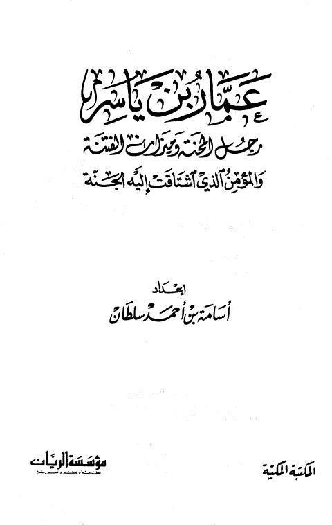

Downloads need an internet connection.
عمار بن ياسر رجل المحنة وميزان الفتنة والمؤمن الذي اشتاقت إليه الجنة
Authors: أسامة بن أحمد سلطان
Publishers: مؤسسة الريان المكتبة المكية
**▫️ العنوان: عمار بن ياسر رجل المحنة وميزان الفتنة والمؤمن الذي اشتاقت إليه الجنة** ▪️ المؤلف: #أسامة_بن_أحمد_سلطان ▫️ الناشر: #المكتبة_المكية • #مؤسسة_الريان ▪️ تاريخ النشر: 1420هـ 1999م ▫️ بلد النشر: مكة المكرمة، #السعودية • #لبنان ▪️ الطبعة: 1 ▫️ عدد الأجزاء: 1 ▪️ الصفحات: 336 ▫️ نوع الوعاء: #كتاب ▪️ التصنيف الرئيسي: #التراجم_والأعلام ۪